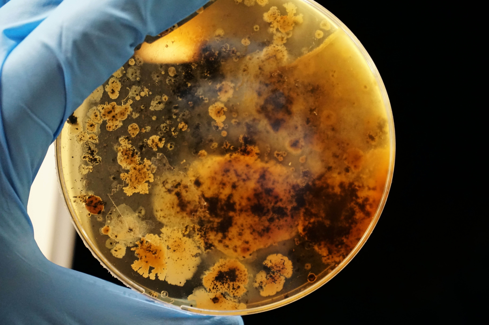

Биология, русский, математика
Такая комбинация открывает дорогу в большое количество направлений, таких как: психология, ветеренаярия,
биология, биотехнология, медицинская кибернетика и тд.

Психология - гуманитарная научная дисциплина, изучающая закономерности
возникновения,
развития и функционирования психики и психической деятельности человека и групп людей.
Образование
в этой сфере можно получить в таких вузах, как:
- НИУ ВШЭ;
- РАНХиГС;
- ГАУГН;
- РУДН;
- РГСУ;
- РГГУ;
- МГМСУ им. А. И. Евдокимова;
- Первом МГМУ им. Сеченова.
Ветеринария - отрасль медицины, которая занимается лечением животных
Образование
в этой сфере можно получить в таких вузах, как:
- МГАВМиБ им. К. И. Скрябина;
- МГУПП;
- РУДН;
Биология - наука о живых существах и их взаимодействии со средой обитания.
Изучает все аспекты жизни, в частности: структуру, функционирование, рост, происхождение,
эволюцию и распределение живых организмов на Земле.
Классифицирует и описывает живые существа, происхождение их видов,
взаимодействие между собой и с окружающей средой.
Образование
в этой сфере можно получить в таких вузах, как:
- ВШЭ;
- РНИМУ им. Н.И. Пирогова;
- МИФИ;